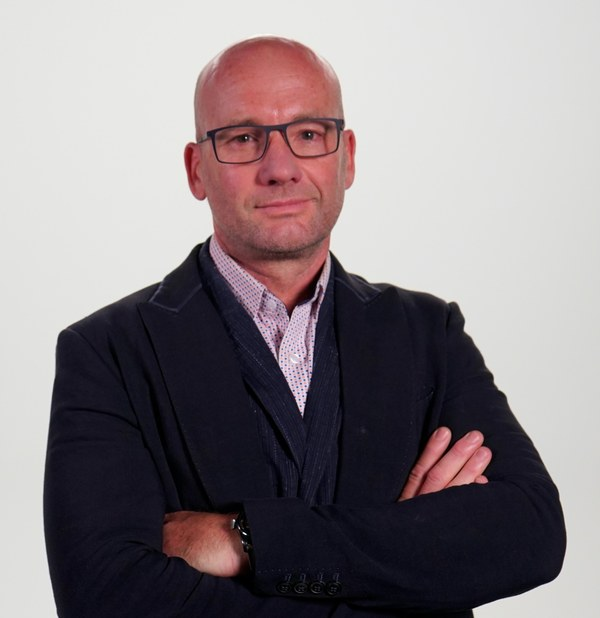
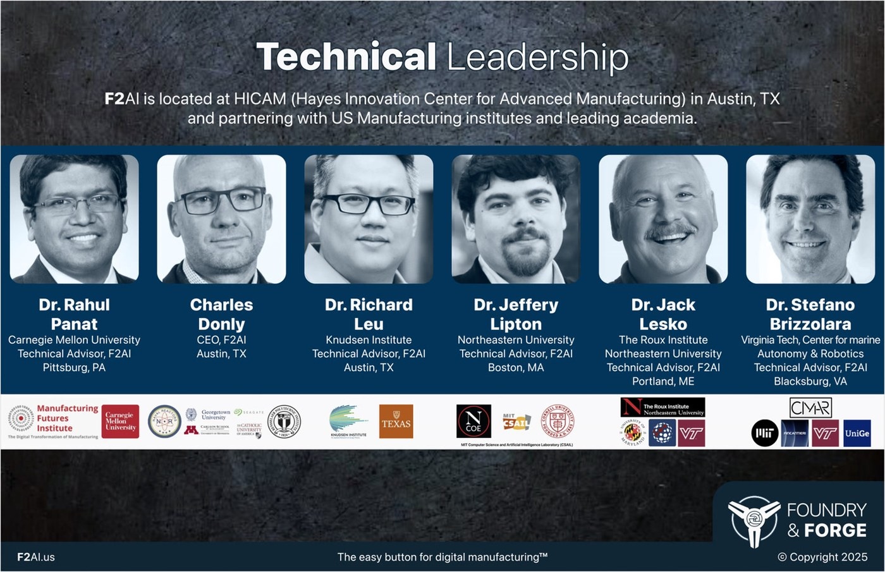

Foundry & Forge AI is modernizing Release-to-Work for U.S. Navy shipbuilding — connecting shipyards, manufacturers, and the digital tools they need to build at scale.
The Challenge
The U.S. Navy's 2025 plan calls for a 32% increase in battle-force ships to 390, a 50% increase in build capacity by tonnage, and annual costs approaching $35.8 billion. Yet current industrial capacity is already 40% or more behind today's output requirements.
At the center of these failures is a chronic breakdown in Release-to-Work (RTW) — the process that determines if a shipyard or vendor has the validated technical data, materials, instructions, and charging codes required to begin work. At most large U.S. shipyards, reliable build plans don't extend beyond 8-10 weeks due to a "fish-net" planning approach that governs work sequencing beyond that horizon.
The consequences ripple across the entire Maritime and Submarine Industrial Base. Newport News, Bath Iron Works, Fincantieri Marinette Marine, and General Dynamics Electric Boat have all publicly cited RTW as a major source of schedule slippage. Meanwhile, vendor participation has decreased over the last 40 years — only about 5,000 small and mid-sized manufacturers serve the Navy out of an estimated 60,000-70,000 capable firms.
Improving RTW doesn't require perfection. It requires reliable, timely, and repeatable signals that are minimally disruptive to the shop floor — a lightweight, vendor-first digital layer that bridges today's 8-10 week window while the Navy undertakes broader digital infrastructure modernization.

Leadership
Chief Executive Officer & Principal Investigator
Charles Donly is a strategic executive, physicist, and engineer with over 20 years leading global technical teams across AI/ML, advanced manufacturing, high-performance computing, and defense engineering.
Charles began his career as a Lieutenant in the U.S. Navy, selected to work at the historic Naval Reactors design group to work on nuclear power design for aircraft carriers and submarines. He held Top Secret and Q clearances, and was awarded the Naval Achievement Medal for excellence in engineering development.
Prior to Co-founding F2AI, Charles served as Chief Strategy Officer at neurothink.io, where he built and led a team of 20 AI/ML engineers and architected an industry-leading Machine Learning as a Service platform with first-to-market virtualized A100 GPUs. At Seagate Technology, he practiced business excellence as a Master Black Belt in Six Sigma and rose to Senior Director in both development and operations, managing global teams of 100 engineers across Singapore, China, and the U.S. with annual budgets of $20M and a $250M capital equipment roadmap.
Charles holds a B.A. in Physics (Magna Cum Laude) from Georgetown University, holds two masters degrees in Menchanical Engineering and Nuclear Engineering, completed an Executive MBA from the Carlson School of Management at the University of Minnesota, and holds an Executive Management Certificate from Harvard Business School. He also holds patents in underwater exploration systems.
Technical Advisory Board
F2AI is located at HICAM (Hayes Innovation Center for Advanced Manufacturing) in Austin, TX and partnering with U.S. manufacturing institutes and leading academia.

Carnegie Mellon University
Pittsburgh, PA
Knudsen Institute
Austin, TX
Northeastern University
Boston, MA
The Roux Institute, Northeastern University
Portland, ME
Center for Marine Autonomy & Robotics, Virginia Tech
Blacksburg, VA
Our Mission
F2AI is headquartered in Austin, TX with a demonstration facility at the Hayes Innovation Center for Advanced Manufacturing (HICAM). Our engineering partnerships with EOS Additive Minds, Wolfram Engineering, and the Knudsen Institute anchor us in one of the nation's top technical and startup ecosystems.
F2AI is the easy button to attract and grow vendors with a pull-based model instead of an expensive push. We make shipbuilding the first client of choice for advanced manufacturers by meeting them where they are — integrating with existing MEP systems, automating data collection, and matching RFQs to proven capabilities.
Our technical advisory board and partnerships span Carnegie Mellon University, Northeastern University, Virginia Tech, and Austin Community College. Combined with industry partnerships at BIW, GDEB, and Portsmouth Naval Yard, F2AI bridges academia and the shipyard deck plate.